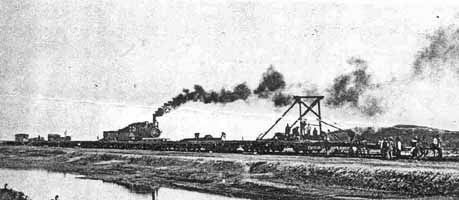
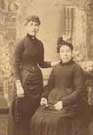
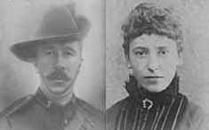

FRASER
GRANDPARENTS

|
|
|
|
FRASER
GRANDPARENTS
|
|
HUGH FRASER
BIRTH Born to Thomas Fraser, a dyer and also at one time a miller and Mary Elder, at 52 Tomnahurich Street, Inverness on 23 April 1868, he was one of several Hugh Frasers born in that Parish, that year, showing the popularity of a few Clan Fraser of Lovat names, such as Simon, Hugh and Thomas, that go back into Clan history for hundreds of years, thus giving genealogists a hard time, it's easier to find a Smith in Inverness, than a Fraser. My Great Grandfather had been employed as a dyer, miller and general labourer in his lifetime and my Great Grandmother was from a long established Inverness family. There's a possibility his father Thomas had several siblings but I've only had contact from a descendant of William and a descendant of John born, Lochend, Inverness 14 February 1839. John and his wife worked at, what was then, Inverness's Asylum and it's possible Hugh's sister, Catherine born Inverness 31 August 1857, also worked there.
YOUTH
Hugh is next found in the 1881 census at 15 Telford Street, Inverness, which
still stands, with his parents and 3 siblings, he's still at school, as is,
interestingly, his 16 year old sister Ann and Donaldina must have been named
after their Grandfather, Donald Fraser. Source: FHL Film 0203421 GRO Ref Volume
098 EnumDist 15 Page 23 Thomas FRASER M 46 M Inverness, Rel: Head Occ: Gen
Lb Mary FRASER 50 F Inverness, Rel: Wife Alexander FRASER U 21 M Inverness,
Rel: Son Occ: Tailor Ann FRASER 16 F Inverness, Rel: Daur Occ: Scholar Donaldina
FRASER 14 F Inverness, Rel: Daur Occ: Millworker Hugh FRASER 12 M Inverness,
Rel: Son Occ: Scholar
Whilst I haven't researched them, I believe he had another 4 siblings, Catherine
b 1857, Mary Ann b 1861, Margaret, her twin and Mary b 1862. We also believe
the family to be Gaelic speaking and the fact his parents, both from Inverness,
were married in the East Free Church of Scotland, on the 26 December 1856,
adds to this belief.
 |
Granddad's Boer War Medals
|
 |
There's a gap in the records till the 5th of January 1899 when Hugh enlisted in the Black Watch and went to the Boer War. It's always a puzzle as to why a Gaelic speaking Lovat Fraser would join a Scots speaking regiment from outside its traditional area, although there is an historic link, an entire company of the original regiment was formed in 1716 by The Old Fox himself, the 11th Lord Lovat, then in usual controversial manner, he was removed but reappointed and raised a new company in 1725, of what was then called the Independent Highland Companies. However, in Granddad's "Militia Attestation" form, he does state he previously served in the Royal Highlanders i.e. the Black Watch, before and his roll number of 7047 may show an enrolment of about 1885. If he was a career soldier for part of the missing 17 years, then before the war the battalion was in Dublin in December 1886 on garrison duty, September 1888 Belfast, April 1891 Limerick, January 1893 Glasgow, 1894 Edinburgh, 1896 York, 1898 Aldershot, 2 January 1900, sailed for South Africa from either Portsmouth or Dublin.
ARMY RECORD His 5th January 1889 Militia Attestation or enrolment form shows him to be living at 4 Duff Street, Inverness, where his parents died in 1902, so it looks like they had moved from Telford Street (1881 census) and he was living at the family home, was 30 years and 9 months, labouring for a Mr Connor, single no children and was enrolling in the 3rd Battalion Royal Highlanders, Perth, as a militiaman, for a minimum of 4 years. He was 5'6, 140 lbs, fresh complexion and brown hair. Hugh's Statement of Services states, 3rd Royal Highland Reenlisted 19/6/99, Militia Reserve 4/7/99, embodied 14/12/99 to 25/8/1902, posted with the 2nd Battalion 3/1/1900 to 25/8/02. Sometimes the handwriting is difficult to read but one note seems to read, 3rd reformed after SA (I assume South Africa) 25/8/1902 disembodied, then this is covered with another note that could say he was paid his Hats? Gratuity for months of August September 02. Then in flowing handwriting on behalf of his Adjutant, "Discharged Ter. of Engl, 4/1/03. Character - Very sm," whatever that means. Finally, his Military History Sheet also gives his service abroad, Rank-Private, in South Africa, from 3/1/1900 to 25/8/02, including embarkation and disembarkation, so he'd been away when his mother died on 29th April 1902. The sections on wounds, injuries, gallant conduct are blank, obviously a sensible man.
He was in F Company, one of eight in the Battalion when it sailed at the start of 1900. He always shows the rank of private and received the Queen's South Africa Medal with bars: Paardeberg, Driefontain, Cape Colony, Transvaal South Africa 1901, 1902 (each bar represents an action or series of actions, in which the recipient took part). He also received the King's South Africa Medal. (Medal roll of The Black Watch 1801-1911 p216).
 Granddad in F Co. football team, second from left, sitting on bench |
|
BOER WAR 1899-1902: I've no idea what exactly he did in the war and can only give an overview of what happened, it was an unjust war, with one powerful country wanting an excuse to seize rich natural assets, this time gold, which is still being repeated in history, to this day, so little lessons were learnt. Black Africans fought on both sides with promises of reward, for after the war but received none. On 11 December 1899, after war was declared on the 11 October, the British Army, under the incompetent General Methuen, suffered a defeat at Magersfontein. The Black Watch, as did the rest of the Highland Brigade, fought bravely but the Boers were fighting for their lands and held against a more powerful force. There was a battle at Koodoesberg on 18th February 1900, where 2,400 Boers were captured, the Battalion entered Bloemfontein on the 15 March and soon after new recruits arrived, doubling the strength of the Battalion from 450. In May they were besieged at Heilbron but the poaching skills of the Lovat Scouts, the Fraser mounted regiment, kept them fed and was equal to any mounted Boer.
After the fall of Pretoria, the Boer capital, on 5 June, the Black Watch were allocated to "pacification duties" in the Orange Free State and by August they had covered 1,000 miles on foot with 2,000 ahead of them, whilst the enemy fought a mounted guerrilla war, with constant sniping and long range bombardment. Although, in July they had been involved in some fierce fighting leading to the capture or death of 4,000 Boers at Retiefs Nek. In October the tactics were changed to "cordoning off" and the Black Watch joined a cordon near Ladybrand, they were transported by train after all that marching, did this little luxury lead to Hugh working on the railway later in life? They spent the next year there, 2 months in Natal, then moved to Harrismith, where, for a short time, the 1st Battalion, that had been in India, joined them. On 31st May 1902, the Boers finally surrendered, there had never been more than 65,000 of them, against 440,000 men from throughout the Empire. Concentration camps were also used against civilians, using an idea previously tested by the Americans.
| Click, forms | to enlarge |
MARRIAGE He married Jessie (Janet) Duff, (born Aberdeen 27 August 1868) under special licence, at 94 Castle Street, Dennistoun Glasgow, 17th October 1902, he was a railway labourer and she could've been working at Glenco, Bearsden, as he sent her his medals there. They have both their addresses on the marriage certificate as 276 Castle Street, Glasgow and looking at Granddad's discharge date of the 25th August, he must have gone up to Glasgow, after disembarkation, got a job and got married in under two months, no mean feat in those days, so it must have been love. I've no proof how an Invernessian met this Aberdonian in 19th century Scotland but I have a strong theory. Jessie had a brother Alexander, there is an A Duff who enrolled in the Black Watch about the same time as Granddad and there is some family anecdotal evidence about an uncle being in the army and forever getting promoted and demoted, like a yoyo, so if this A Duff is the brother, then, that's how they met.
My Grandparents returned to Inverness, where daughter Jessie (she later married a Dave Reston) was born on 6 June 1904 and son Thomas, my father, in 25 January 1906, at 18 Duff Street (my brother and I always thought dad was pulling our legs, by claiming to be born on Burns Day), Hugh signed the birth certificate so he was still in Inverness in 1906. The next record was a picture post card to Grandma's brother Alexander Duff, at 24 Allan Street, Aberdeen (later to become our family home for 40 years) from Hugh in Miniota, Manitoba, Canada, June 1908. He was away from his family, working, laying the Grand Trunk Railway (Pacific?), which was merged into the Canadian National Railways, by the Canadian Government in the 1920s, due to the bankruptcy of a number of railways and is now their main transcontinental line.
|  |
MINIOTA,
CANADA The following information was given to me by Eleanor O'Callaghan who
was the Treasurer of the local Museum. Miniota was first settled in 1879 and
later became a Municipality, it must have been a very small place in 1908,
the name is Sioux, "minnie", meaning water and "ota", plenty. The first train
went through Miniota to Melville, Saskatchewan in September 1908 and a daily
passenger service established, which fits with the dates of Hugh working there.
The notes below are interesting, along with the photo above, that shows a
track laying machine near Miniota in 1906, very similar to the one in the
Post Card sent to Aberdeen,
Notes
supplied by a Mr. McConnell: "Wages on railroad- $1.25 for a ten hour
day, ordinary labor and board. There was a camp and a camp cook. Food was
mostly shipped in. $50 a month for foreman under the walking boss, he was
offered $75 a month the next year. Uno, a cut sixty-nine feet deep, was filled
using wheelbarrows, carts and scrapers. The carts were one horse drawn. The
only mechanization was a steam shovel which dumped the fill into a chute.
This steam shovel came up to Miniota on the C.P.R and was taken out at Miniota
on a track laid ahead of it, picking up the back sections and laying them
ahead. It was fired with coal. The dirt froze so hard that the steam shovel
dug it up In Such big lumps they would upset the little carts, so it quit
at Miniota and moved into cut at Arrow River."
|
|
 Granddad sitting bottom right, with workmates in Miniota |
LATER LIFE We know Hugh returned to Scotland, our first known place is Fordoun, near Brechin, my late cousin Mary had a book that her mum Jessie Reston was given at school there and dad also told me about it. Mary's sister, Nancy thought our Granddad was a signalman at some point (maybe his final illness took him to a less strenuous job) but he was classed as a Wagon Repairer, on his death certificate. The next place we have the family, is Addiewell and I'd guess he would have been working for London Midland Scottish Railways, as they had lines in Fordoun and near Addiewell. He died at, Brucehill, Addiewell, West Calder, Midlothian, Scotland, aged 48, with Carcinoma of Stomach, lasting eight months, on 8 June 1916 and is buried at West Calder Cemetery. Neither Hugh or his wife Jessie, who was buried in Aberdeen, alongside her brother and sister-in-law, Mary Ann Copeland, had headstones but one was placed at Hugh's grave by my Reston cousins and my brother Colin and I put a vase on our grandmother's. We've often wondered whether it was simple poverty or some religious reason that no headstones were erected and it remains an unsolved puzzle. If you've been following Jessie's story, return for her life after 1916.
Hugh Fraser not only worked around Scotland but worked his way to the centre of Canada, served years as a soldier, marched thousands of miles, fought a major war in South Africa but died at an early age of cancer. His wife Jessie Duff lived on for another 42 years, almost the equivalent of another lifetime, by Hugh's standards. There's no one alive, now, who knew him, so I hope this is a fitting tribute to my Granddad.
BIRTH Born to Alexander Duff, a widowed Chelsea Out Pensioner, meaning he didn't live in the Chelsea Hospital, London but was a recognised pensioner and Janet (Jessie) Watson, at Murray's Court, 22 Loch Street, Aberdeen on the 27 August 1868, at 08.45am, on a Thursday. Alexander was from Midlothian, was also a wood mill labourer in the 1871 census and at the time of Jessie's birth, a granite polisher. Mum Jessie was a wool mill worker in 1868 and a laundress in the 1881 census.
|

The 2 Jessies Grandma and Gt Grandma |
 Grandma Jessie 19 years old in Inverness |
YOUTH
She had one sibling Alexander born in Aberdeen 20 November 1863, they were
both illegitimate, Alexander snr was a widower but there's no trace of him
marrying Jessie snr, who was 12 years younger than him, why they didn't marry,
we've no idea. Jessie snr took the name Duff and even claimed to be a widow,
so apart from legality the marriage seems a normal one. Alexander snr died
in 1872 but don't know when Jessie snr died but she was still alive when Jessie
married in 1902. In the 1881 census she was 13, living in a now demolished
tenement in Aberdeen and was a message girl to a drapers.
Dwelling: 31 Chapel St Census Place: Aberdeen Old Machar, Aberdeen, Scotland
Source: FHL Film 0203448 GRO Ref Volume 168-2 EnumDist 10 Page 18 Marr Age
Sex Birthplace Jessie DUFF W 54 F Aberdeen, Scotland Rel: Head Occ: Laundress
Alexander DUFF U 17 M Aberdeen, Scotland Rel: Son Occ: Home Painter Apprentice
Jessie DUFF 12 F Aberdeen, Scotland Rel: Daur Occ: Message Girl (Drapers).
I've nothing written about her till her marriage in Glasgow, 1902 but I've found a photo of her on her own in 1887, she was quite an attractive woman, taken at the Munro Rembrandt Studio, in Aberdeen, one with her mother taken in Aberdeen but not dated, although could be a similar period, then one of her in 1898 taken at the William Ross studios, Glasgow. So that puts her in Glasgow in that year, the Boer War hadn't yet started, her future husband was in Inverness on 5/1/1899 but we do know he sent his Boer War medals to her at someplace called Glenco in Glasgow, so we guess she was in service and they already knew each other but how she met and married my Grandad Hugh Fraser, we can't prove but go to the Marriage section on Hugh's history to find out what happened to her, till Hugh's death in 1916 and read my theory on how they met. Interestingly, her dad is said to be Alexander Duff, on her wedding certificate, her mum's married name was Duff and whilst my Gt Grandmother was still alive when the wedding took place in Glasgow in 1902, there's no evidence she attended.
|
|
|
ANOTHER LIFE
After her husband's death due to cancer in 1916, we understand she stayed
around the West Calder area and raised her two children. Her son, Thomas,
my father, worked at one of the local pits and was involved in the General
Strike, there is a reference from a George McDougal, manager of the Loganlea
Colliery, Addiewell, by West Calder dated 25/6/1927, at some point he also
worked at the famous Caledonian Hotel, in Edinburgh. We don't know exactly
when dad and grandmother moved to Aberdeen but it was within a year of that
letter. Her sister-in-law, Mary Ann Duff nee Copeland, died on or around,
27 June 1927 and her brother, Alexander Duff on or around 14 May 1928, union
records from the now GMB Union show dad joined the union in 1928, at the Aberdeen
Municipal Gas Company, I understand from a niece of dad's, Mary or Nancy,
his sister Jessie had been in service with a Dr Gracie from 12 years and it
was through his friend, dad got the job. They took over the tenancy of the
top floor tenement flat, from Alexander, at 24 Allan Street, where the family
lived till 1967. Her daughter Jessie Elder Duff stayed in West Lothian and
married a miner, Dave Reston but there must have been a fair coming and going,
as the eldest two of young Jessie's five children, Harry and Nancy, were born
in Aberdeen, young Jessie and Dave having stayed in Aberdeen with my dad and
Grandmother, as Harry was born in 1931 this must have been soon after the
move, it must have been quite a crowded tenement.

Allan Street, Communal Washhouse
ALLAN STREET Our tenement in Aberdeen was small, mum and dad had their bed in the living/dining room, which also had the only sink, there was a small room off it for cooking and the po, for late night pees and a small pantry in the tiny entrance hall. Grandma slept in a small box room, separated from the room where my brother Colin and I shared a bed settee, by a curtain. The toilet was shared with the family next door and down a flight of inside stairs and then an outside one, past that was the shared washhouse, another set of stairs took you to the coalhouse, common green and individual allotments. There were six flats sharing number 24, one of the only two tenements in Allan Street with a rear entrance, instead of a front close.

Grandma and
Grandson Colin
THE WAR All the photos of her I've seen, have Grandma in a black full-length dress, a mark of being a widow and she never remarried, my late cousin Nancy's husband George Young, once remarked "she was a ghostly apparition, gliding along, it certainly gave me a scare", the fact George knew her in the 50s helps confirm that she moved back and forth, staying with her son in Aberdeen and daughter in Livingstone Station and later in Blackburn, near Bathgate. Here my cousin Davina Doove, young Jessie's daughter, now in Vancouver, helps me out with the tale, she says, "we lived in Livingstone Station, in somebody's bedroom, seven people. Tom, my brother, was only about a year old, I was four, when Grandma came for either to stay or a holiday, I remember her coming into the room and swinging me around, I also have memories of crumpets or pancakes she brought that had a thick lump of butter in the middle, it was also wartime. I can't remember if she stayed for long but it was shortly after that we moved, as we'd got a new house". Davina's description fits in with my dad being called up to the RAF, then soon after that, my mum and brother moving to Edinburgh, so it looks like Grandma moved, for at least a reasonable period, leaving Allan Street empty. There's also a letter from my dad to mum, written the day he sailed for the Far East, Wednesday 15th November 1943, mentioning mum and Colin making visits to Auntie Jessie's in Livingstone. As for the pancake, I'm pretty sure it was a Rowie/Buttery Roll, for if anyone tastes this culinary delight, unique to the North East of Scotland, the memory stays with you for life.
 Aunt Jessie, Tom and Dave Reston |
AFTER THE WAR Davina continues, "I remember grandma staying with us in our new house for quite a few years and she moved with us to Blackburn, not far from Livingstone. Then the doctor told my mother it was too much for her, so Grandma had to go into a home. She was in it for a few years before she died. It was sad that my mother and Grandma didn't speak much to each other. My mother loved her dad and he died when she was twelve and two days, I think she left home soon after to work at the mine, then went to stay in richer peoples houses, as a sort of housekeeper". This piece of the jigsaw of Grandma's life fits in with my memories, her sisters, Mary and Nancy's and Nancy's husband, George Young. I've fond memories of holidaying at the house at 43 Riddochhill Crescent, Blackburn, it was like a palace after Allan Street and I still remember this toon loon hearing his first cuckoo there, we drove past it a year or so back and it still looks loved and well cared for but the ambience of the village has gone, with the ubiquitous Glasgow overspill. It seems Grandma lived for long periods at Allan Street and Blackburn and when she became too old for her daughter, Jessie Elder Reston nee Fraser or my father, to care for, she went to an old folks home, I can't remember any visits to a home in West Lothian and can only assume she went straight to Maud Hospital in Aberdeenshire.
MAUD She spent her last days in Maud hospital, an old Poor House converted to a geriatric hospital by the NHS. I'll always remember the long rail journey and the long walk from the station, dad couldn't drive then and few people we knew had cars. We'd then see this frail old lady lying there, wearing a light coloured nightdress, instead of the usual black garments. She died on 25 October 1958, aged 90 but dad had taken her back to the city of her birth, she died at Allan Street, where she spent so many years of her life. She is buried at Allenvale cemetery, Aberdeen, where she joined her brother Alexander and his wife, Mary Copeland. Like her husband's her grave it had no headstone, we don't know the reason why but my brother and I have now added a memorial vase to the graveside.
Jessie
Duff had a long and hard life, she survived two World Wars, her husband died
of cancer in the first, when millions were dying in the trenches, yet she
lived another forty two years after his death, a second lifetime in many ways
and she brought up her two children, in difficult times. Yet she succeeded
and at the moment of writing
Hugh Fraser and Jessie Duff have over forty descendants.
